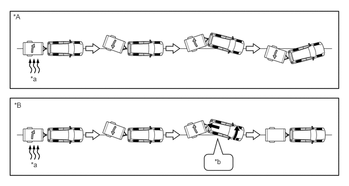
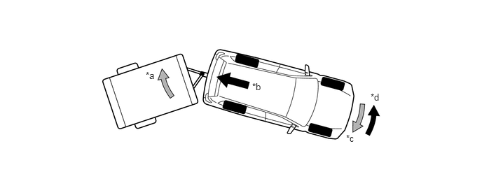

| Last Modified: 10-07-2025 | 6.11:8.1.0 | Doc ID: NM100000002K3AB |
| Model Year Start: 2024 | Model: Tacoma HV | Prod Date Range: [03/2024 - ] |
| Title: BRAKE CONTROL / DYNAMIC CONTROL SYSTEMS: BRAKE CONTROL SYSTEM (for HEV Model): TRAILER SWAY CONTROL; 2024 - 2026 MY Tacoma HV [03/2024 - ] | ||
TRAILER SWAY CONTROL
SYSTEM CONTROL
(a) If the vehicle is towing a trailer with an inappropriate hitch load, trailer sway could be caused by crosswinds, imbalance caused by load, or the driver's steering. Trailer sway control reduces trailer sway by controlling the hybrid output and the braking of each wheel.
|
*A |
Models without Trailer Sway Control |
*B |
Models with Trailer Sway Control |
|
*a |
Side Wind |
*b |
Brake Control + Hybrid Output Control |
(1) The No. 2 skid control ECU detects the occurrence of trailer sway based on signals from the yawrate sensor, the deceleration sensor and the steering angle sensor.
(2) Trailer sway can be reduced by decelerating the vehicle. When the No. 2 skid control ECU detects trailer sway, it controls the brakes of each wheel while simultaneously requesting hybrid output control from the hybrid vehicle control ECU assembly and reducing vehicle speed.
(3) Moreover, by using brake control to reduce the yaw moment caused by trailer sway, trailer sway can be reduced more quickly than by simply decelerating the vehicle.
(4) The slip indicator light on the combination meter assembly blinks when trailer sway control is in operation. Also, the stop light illuminates to inform vehicles behind that the vehicle is decelerating.
|
*a |
Trailer Sway |
*b |
Deceleration Force Caused by Brake Control and Hybrid Output Control |
|
*c |
Yaw Moment Caused by Trailer Sway |
*d |
Control Moment Caused by Brake Control |